概述
- 本篇总结 PageCache 和 BufferCache 的一些演进总结和现状
- PageCache 是什么? 可以参考《第六章 第 8 篇》 , 这里简述一下：
-
- 假设内存是由一个超大数组组成，数组里每个元素就是一个
struct page, 那么其中某些page就构成了PageCache. 具体一个个page由每个inode对应的address_space结构体的 xarray 树管理(具体是address_space->i_pages成员).
- 假设内存是由一个超大数组组成，数组里每个元素就是一个
- BufferCache 是什么? Linux2.6 之后, 其实就是
struct buffer_head结构体,buffer_head的b_page成员指向对应的page结构体, BufferCache 的具体内容还是存放在page中. buffer_head 是磁盘块的一个抽象,一个 buffer_head 对应一个磁盘块 - BufferCache 有什么作用? 以裸设备或分区为背景进行缓存，主要针对两种场景:
-
- 1 应用直接访问裸分区, 比如(cat /dev/sda1 > /dev/null，这样/dev/sda1 内容进入 buffers)
-
- 2 文件系统本身的实现是会把/dev/sda1 当成一个裸分区
一 Linux 2.6 之后的关系
- 介于上述 Page Cache、Buffer Cache 分离设计的弊端，Linux-2.4 版本中对 Page Cache、Buffer Cache 的实现进行了融合，融合后的 Buffer Cache 不再以独立的形式存在，Buffer Cache 的内容，直接存在于 Page Cache 中，同时，保留了对 Buffer Cache 的描述符单元：
buffer_head
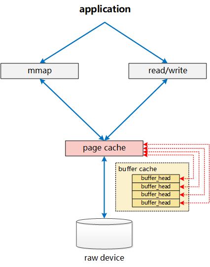
- page 结构中，通过 buffers 字段是否为空，来判定这个 Page 是否与一组 Buffer Cache 关联（在后续的演进过程中，这个判断，转变为由
private字段来判定）。
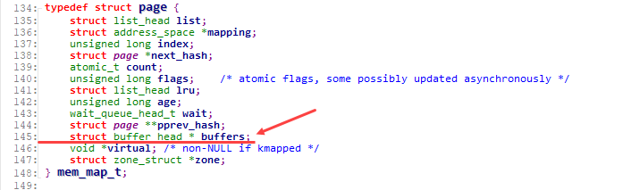
而对应的， buffer_head 则增加了字段b_page，直接指向对应的 page。
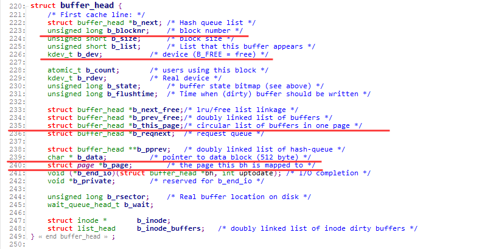
至此，两者的关系已经相互融合如下图所示：
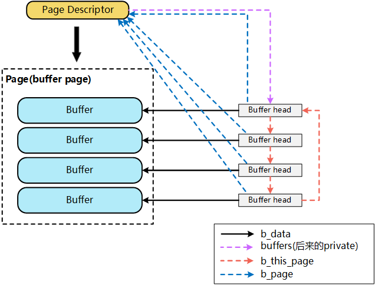
一个文件的 PageCache(page)，通过 buffers 字段能够非常快捷的确定该 page 对应的 buffer_head 信息，进而明确该 page 对应的 device, block 等信息。
从逻辑上来看，当针对一个文件的 write 请求进入内核时，会执行 generic_file_write，在这一层，通过 inode 的 address_space 结构 mapping 会分配一个新的 page 来作为对应写入的 page cache(这里我们假设是一个新的写入，且数据量仅一个 page)：__grab_cache_page，而在分配了内存空间 page 之后，则通过 prepare_write，来完成对应的 buffer_head 的构建。
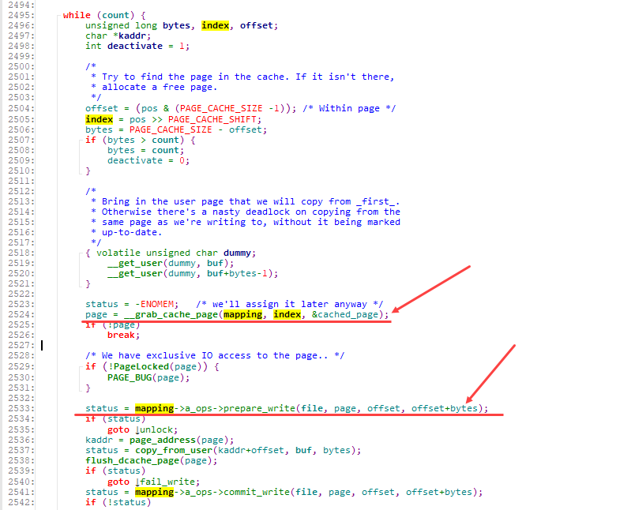
prepare_write实际执行的是：__block_prepare_write，在其中，会针对该 page 分配对应的 buffer_head(create_empty_buffers)，并计算实际写入的在 device 上的具体位置：blocknr，进而初始化 buffer_head(get_block)
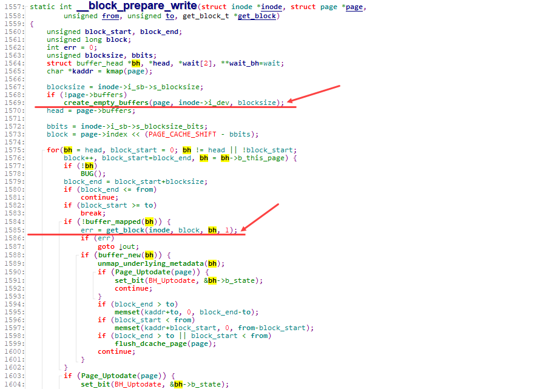
在create_empty_buffers内部，则通过create_buffers以及set_bh_page等一系列操作，将page与buffer_head组织成如前图所示的通过 buffers、b_page 等相互关联的关系。
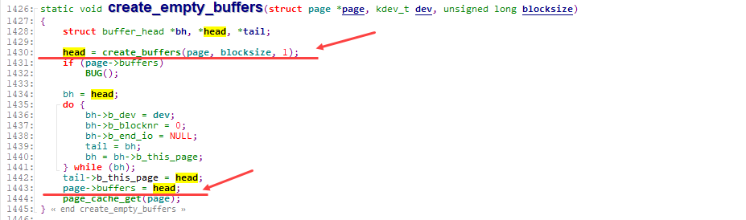
通过create_buffers分配一组串联好的 buffer_head
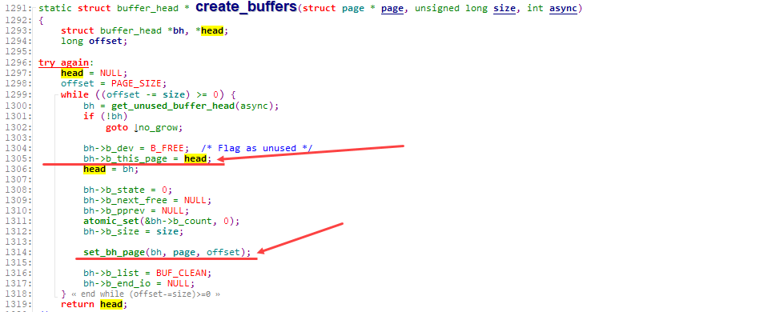
通过set_bh_page将各 buffer_head 关联到对应的 page，以及 data 的具体位置
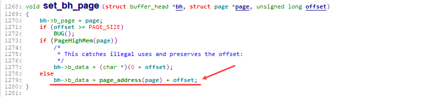
正是如上的一系列动作，使得 Page Cache 与 Buffer Cache(buffer_head)相互绑定。对上，在文件读写时，以 page 为单位进行处理。而对下，在数据向 device 进行刷新时，则可以以 buffer_head(block)为单位进行处理。
在后续的 linux-2.5 版本中，引入了 bio 结构来替换基于 buffer_head 的块设备 IO 操作。
[注意]：这里的 Page Cache 与 Buffer Cache 的融合，是针对文件这一层面的 Page Cache 与 Buffer Cache 的融合。对于跨层的：File 层面的 Page Cache 和裸设备 Buffer Cache，虽然都统一到了基于 Page 的实现，但 File 的 Page Cache 和该文件对应的 Block 在裸设备层访问的 Buffer Cache，这两个是完全独立的 Page，这种情况下，一个物理磁盘 Block 上的数据，仍然对应了 Linux 内核中的两份 Page，一个是通过文件层访问的 File 的 Page Cache(Page Cache)，一个是通过裸设备层访问的 Page Cache(Buffer Cache)。
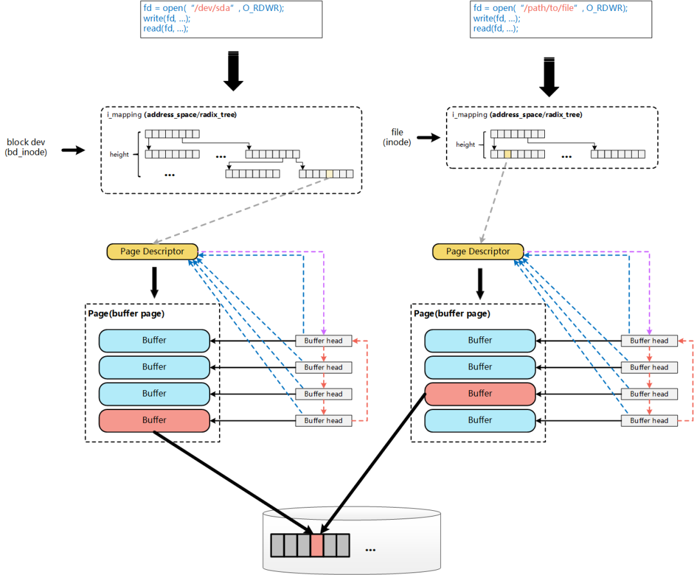
二 核心结构体
1 buffer_head
Linux 6.7版本
/*
* Historically, a buffer_head was used to map a single block
* within a page, and of course as the unit of I/O through the
* filesystem and block layers. Nowadays the basic I/O unit
* is the bio, and buffer_heads are used for extracting block
* mappings (via a get_block_t call), for tracking state within
* a page (via a page_mapping) and for wrapping bio submission
* for backward compatibility reasons (e.g. submit_bh).
*/
struct buffer_head {
unsigned long b_state; /* buffer state bitmap (see above) */
struct buffer_head *b_this_page;/* circular list of page's buffers */
union {
struct page *b_page; /* the page this bh is mapped to */
struct folio *b_folio; /* the folio this bh is mapped to */
};
sector_t b_blocknr; /* start block number */
size_t b_size; /* size of mapping */
char *b_data; /* pointer to data within the page */
struct block_device *b_bdev;
bh_end_io_t *b_end_io; /* I/O completion */
void *b_private; /* reserved for b_end_io */
struct list_head b_assoc_buffers; /* associated with another mapping */
struct address_space *b_assoc_map; /* mapping this buffer is
associated with */
atomic_t b_count; /* users using this buffer_head */
spinlock_t b_uptodate_lock; /* Used by the first bh in a page, to
* serialise IO completion of other
* buffers in the page */
};
Linux 3.16版本
/*
* Historically, a buffer_head was used to map a single block
* within a page, and of course as the unit of I/O through the
* filesystem and block layers. Nowadays the basic I/O unit
* is the bio, and buffer_heads are used for extracting block
* mappings (via a get_block_t call), for tracking state within
* a page (via a page_mapping) and for wrapping bio submission
* for backward compatibility reasons (e.g. submit_bh).
*/
struct buffer_head {
unsigned long b_state; /* buffer state bitmap (see above) */
struct buffer_head *b_this_page;/* circular list of page's buffers */
struct page *b_page; /* the page this bh is mapped to */
sector_t b_blocknr; /* start block number */
size_t b_size; /* size of mapping */
char *b_data; /* pointer to data within the page */
struct block_device *b_bdev;
bh_end_io_t *b_end_io; /* I/O completion */
void *b_private; /* reserved for b_end_io */
struct list_head b_assoc_buffers; /* associated with another mapping */
struct address_space *b_assoc_map; /* mapping this buffer is
associated with */
atomic_t b_count; /* users using this buffer_head */
};
Linux 2.6版本
/*
* Historically, a buffer_head was used to map a single block
* within a page, and of course as the unit of I/O through the
* filesystem and block layers. Nowadays the basic I/O unit
* is the bio, and buffer_heads are used for extracting block
* mappings (via a get_block_t call), for tracking state within
* a page (via a page_mapping) and for wrapping bio submission
* for backward compatibility reasons (e.g. submit_bh).
*/
struct buffer_head {
unsigned long b_state; /* buffer state bitmap (see above) */
struct buffer_head *b_this_page;/* circular list of page's buffers */
struct page *b_page; /* the page this bh is mapped to */
sector_t b_blocknr; /* start block number */
size_t b_size; /* size of mapping */
char *b_data; /* pointer to data within the page */
struct block_device *b_bdev;
bh_end_io_t *b_end_io; /* I/O completion */
void *b_private; /* reserved for b_end_io */
struct list_head b_assoc_buffers; /* associated with another mapping */
struct address_space *b_assoc_map; /* mapping this buffer is
associated with */
atomic_t b_count; /* users using this buffer_head */
};
- buffer_head 是磁盘块的一个抽象,一个 buffer_head 对应一个磁盘块，buffer_head 中保存对应的磁盘号
- buffer_head 把 page 与磁盘块联系起来，由于 page 和磁盘块的大小可能不一样，所以一个 page 可能管理多个 buffer_head 这里假设 page 大小 4K，块大小为 1K, buffer_head,page 和磁盘块关系如下：
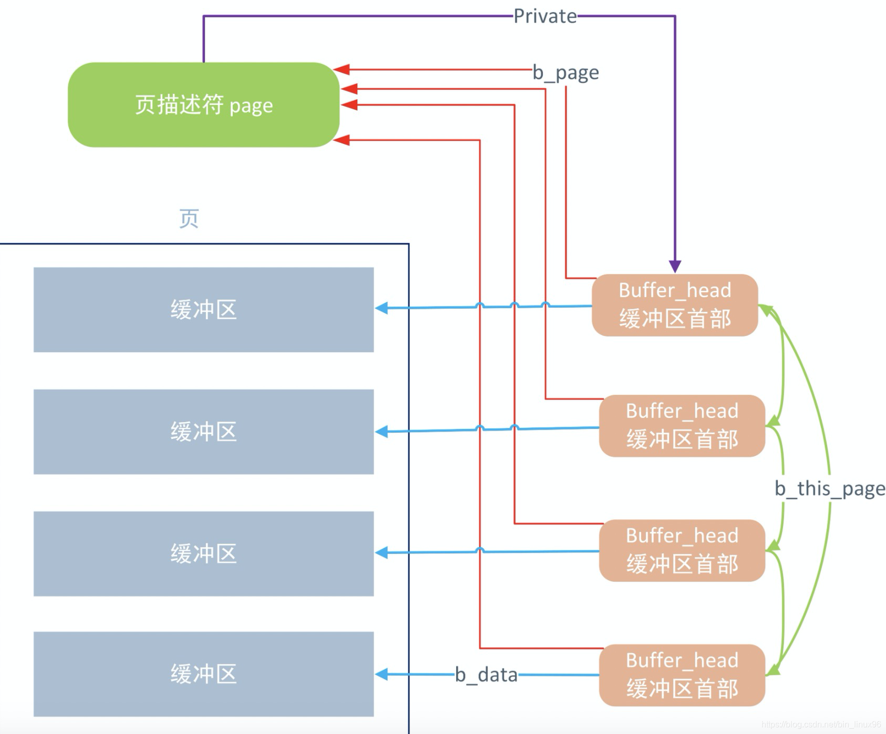
2 request 结构体
3 bio 结构体和写磁盘的整体过程
- 首先 submit_bh()函数，其作用：根据缓冲区首部的内容创建一个 bio，在该函数中通过 buffer_head 传进来的信息对 bio 的信息赋值。如下
bio->bi_sector = bh->b_blocknr * (bh->b_size >> 9); //扇区号
bio->bi_bdev = bh->b_bdev; //设备，如分区
bio->bi_io_vec[0].bv_page = bh->b_page; //对应页
bio->bi_io_vec[0].bv_len = bh->b_size; //块大小
bio->bi_io_vec[0].bv_offset = bh_offset(bh); //buffer_head指向的缓存区相对于其所在页的偏移
4 bio 结构体和 bio_vec 结构体关系:
- bio 和 bio_vec 的关系可以参考文件读写（BIO）波澜壮阔的一生, 如下图:
- bio 的定义如下(include/linux/blk_types.h)
struct bio_vec {
struct page *bv_page;
unsigned int bv_len;
unsigned int bv_offset;
};
struct bio {
struct bio *bi_next; /* request queue link */
struct block_device *bi_bdev;
struct bvec_iter bi_iter;
/* Number of segments in this BIO after
* physical address coalescing is performed.
*/
unsigned int bi_phys_segments;
bio_end_io_t *bi_end_io;
void *bi_private;
unsigned short bi_vcnt; /* how many bio_vec's */
atomic_t bi_cnt; /* pin count */
struct bio_vec *bi_io_vec; /* the actual vec list */
};
它是一个描述硬盘里面的位置与 page cache 的页对应关系的数据结构，每个 bio 对应的硬盘里面一块连续的位置，每一块硬盘里面连续的位置，可能对应着 page cache 的多页或者一页，所以它里面会有一个 bio_vec *bi_io_vec 的表(可以理解为一个 bio_vec 数组, 数组是用首元素地址表示的, 所以这里指针指向首元素即可)
我们现在假设 3 种情况
- 第 1 种情况是 page_cache_sync_readahead()要读的 0~16KB 数据，在硬盘里面正好是顺序排列的(是否顺序排列，要查文件系统，如 ext3、ext4)，Linux 会为这一次 4 页的读，分配 1 个 bio 就足够了，并且让这个 bio 里面分配 4 个 bi_io_vec，指向 4 个不同的内存页：
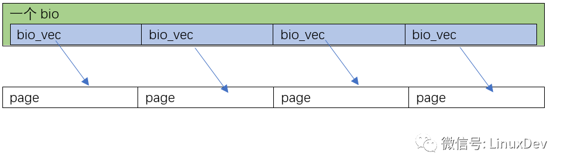
- 第 2 种情况是 page_cache_sync_readahead()要读的 0~16KB 数据，在硬盘里面正好是完全不连续的 4 块 (是否顺序排列，要查文件系统，如 ext3、ext4)，Linux 会为这一次 4 页的读，分配 4 个 bio，并且让这 4 个 bio 里面，每个分配 1 个 bi_io_vec，指向 4 个不同的内存页面：
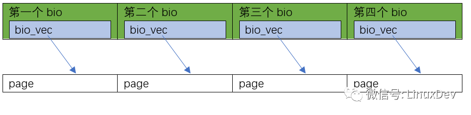
- 当然你还可以有第 3 种情况，比如 0~8KB 在硬盘里面连续，8~16KB 不连续，那可以是这样的:
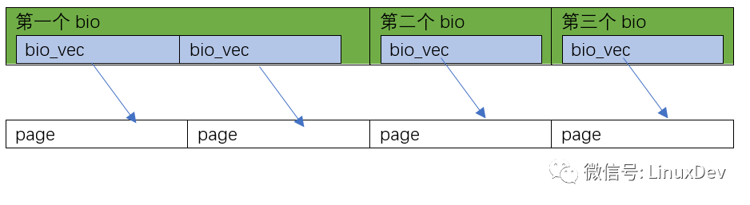
四 理解 free 命令的输出
1 现象
- 本篇文档总结 Linux free 命令展示的 buffers 和 cached 区别
# free
total used free shared buffers cached
Mem: 3848656 2983016 865640 5312 324432 2024904
-/+ buffers/cache: 633680 3214976
Swap: 2031612
2 结论
buffers表示块设备(block device)所占用的缓存页，包括：直接读写块设备、以及文件系统元数据(metadata)比如 SuperBlock 所使用的缓存页；-
cached表示普通文件数据所占用的缓存页, 也就是Page Cache. -
这里稍微多说一点 buffers 和 cached。Linux 2.4.10 内核之前，磁盘的缓存有两种，即
Buffer Cache和Page Cache。前者缓存管理磁盘文件系统时读取的块，后者存放访问具体文件内容时生成的页。在 2.4.10 之后，Buffer Cache这个概念就不存在了，这些数据被放在Page Cache中（这种Page被称为Buffer Pages）。 -
简而言之，现在磁盘的 cache 只有
Page Cache一种，在Page Cache中，有一种Page叫Buffer Page，这种Page都与一个叫buffer_head的数据结构关联，这些页也就在内存统计中用buffers这个指标来单独统计了。 -
- 简而言之, bdev 文件系统产生的 page cache 统计到 Buffers，其他文件系统产生的 page cache 统计到 Cached。因为经过文件系统产生的文件必然有
inode,inode成员中其实有记录对应blocks信息，所以无需struct buffer_head
- 简而言之, bdev 文件系统产生的 page cache 统计到 Buffers，其他文件系统产生的 page cache 统计到 Cached。因为经过文件系统产生的文件必然有
3 buffers(BufferPage)主要有 2 个用户（2 种使用场景）：
- 应用直接访问裸分区 (即使是 Direct IO ，仍然绕不开的 buffers 和块 IO 层)
- 文件系统本身的实现，会认为/dev/sda1 是个裸设备，因此文件系统的 metadata 会缓存到 buffers
如果你 cat /dev/sda1 > /dev/null，这样/dev/sda1 内容进入 buffers，如果你 cat /mnt/aaa/bbb.c > /dev/null，则/mnt/aaa/bbb.c 的内容进入 cached。所以，这两种 cache，一个以裸设备或分区为背景，一个以文件系统里面的文件为背景，无论读写皆然。
4 free 读取信息过程
free 命令是从 /proc/meminfo 中读取信息的，跟我们直接读到的结果一样
# cat /proc/meminfo
MemTotal: 3848656 kB
MemFree: 865640 kB
Buffers: 324432 kB
Cached: 2024904 kB
...
SwapTotal: 2031612 kB
SwapFree: 2031612 kB
...
Shmem: 5312 kB
...